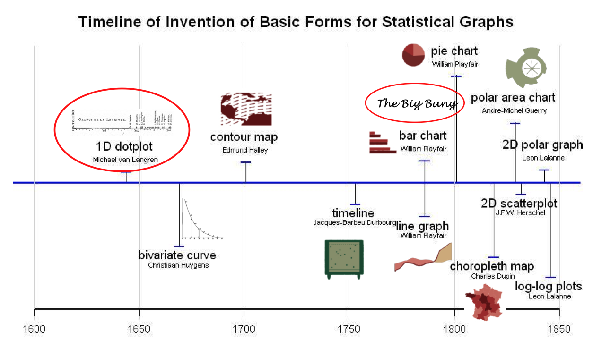
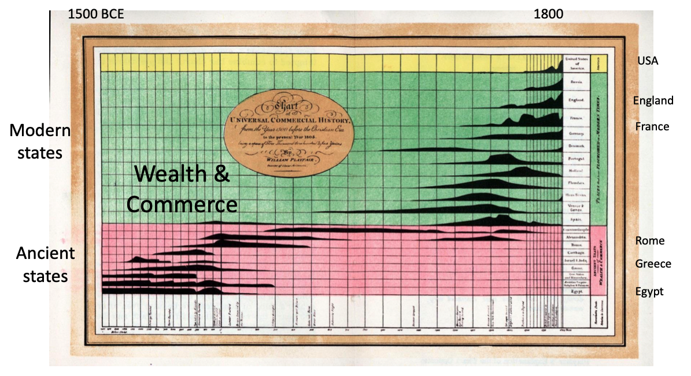
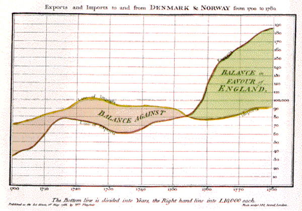
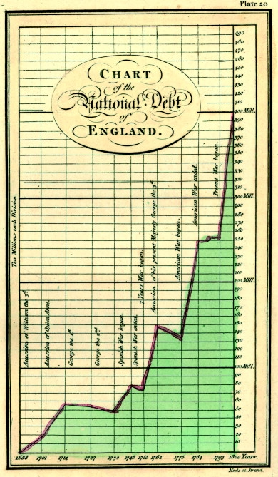
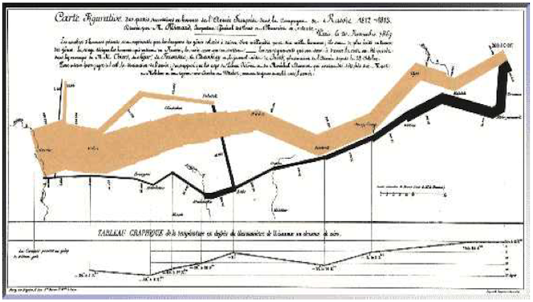

Marcos Históricos da Visualização de Dados#
Prof. Gustavo Oliveira
CI/DCC/UFPB
Considerações iniciais#
Mapeamento pleno dos fatos históricos de dataviz é quase impossível
Faremos um breve resumo dos principais eventos que marcaram época
Base: Milestones in the History of Data Visualization: A Case Study in Statistical Historiography, de Michael Friendly, York Univ., Canadá
Cronologia#
Registros da informação quantitativa técnica mais especializada remonta ao século XV
Motivação: cartografia e pensamento estatístico
Relatos são incompletos e organizados por autores ligados à matemática, astronomia e estatística.
Consideraremos apenas eventos ocorridos a partir do século XVII
{kind=link}
1600 a 1699 - Medições e teoria#
Início do século: interesse em medir quantidades físicas (tempo, distância, espaço)
Navegação, expansão territorial e estudo dos astros.
Ascensão da geometria analítica, teoria dos erros e estimações, teoria da probabilidade, estatística demográfica.
Michael Florent van Langren, astrônomo da corte espanhola supostamente quem criou a primeira representação visual de dados estatísticos em 1644
Gráfico de Van Langren#
Nasceu em Amsterdam (1598); morreu em Bruxelas (1675)
Van Langren mostra como vários autores determinaram a distância de Toledo a Roma
A distância verdadeira é 16 graus e 30 minutos (marcada pela seta)

Notas#
O gráfico de Van Langren foi a 1a. RV de um dado estatístico
Diferenciou-se por ser baseado em dados
Oresme (~1360), por exemplo, não tinha dados
Como Van Langren influenciou as RVs#
{kind=link}
1700 a 1799 - Novas formas gráficas#
Formas gráficas mais elaboradas passaram a enriquecer os mapas
Caminhos foram abertos para isolinhas e isocontornos, mapeamento temático de dados físicos, geológicos, econômicos e médicos.
Gráficos abstratos e os primeiros gráficos de funções matemáticas introduzidos
Joseph Priestley#
Nasceu na Inglaterra em 1733; morreu nos EUA em 1804
Desenvolveu gráfico de barra (tempo de vida de pessoas)
{kind=link}
William Playfair#
Nasceu na Escócia em 1759; morreu em 1823
Considerado o principal inventor da época
Pioneiro da construção das RVs que utilizamos até hoje:
gráfico de linhas e de barras (1786)
setores (“pizza”) e circular (1801).
Mapa da história do comércio exterior da Inglaterra (1500 AEC - 1800 DEC)#
{kind=link}
Balança comercial da Inglaterra#
{kind=link}
Série temporal da Inglaterra#
Série temporal tripla: variação de preço do trigo, do salário semanal e do monarca reinante ao longo de 250 anos (1565 - 1820).
{kind=link}
Dívida pública da Inglaterra#
{kind=link}
Gráfico de “pizza”#
Proporções do Império Turco na Ásia, Europa e África antes de 1789

Período de 1800 - 1850: princípio dos gráficos modernos#
Explodiram os gráficos estatísticos e os mapas temáticos modernos
Histogramas, séries temporais, gráficos de dispersão e atlas compreensivos
Diversas formas de simbolismo em tópicos econômicos, sociais, morais
Charles Minard#
Minard é o mais proeminente deste tempo
Campanha militar de Napoleão#
{kind=link}
Tableau gráfico#
Transporte de artigos comerciais pelo Canal du Centre
Paradas intermediárias espaçadas por distância
{kind=link}
Período de 1850 - 1900#
Na segunda metade do século XIX, cenário pronto para consolidação da dataviz
Escritórios oficiais sobre análises estatísticas foram estabelecidos por toda a Europa
Teoria estatística encabeçada por Gauss e Laplace
(Ver slides Friendly)
Período de 1900 - 1950#
Pouca inovação para gráficos estatísticos
Figuras passaram a ser meras ilustrações.
Fase da história da visualização de dados conhecida como a era das trevas.
Representações visuais tornaram-se populares, no entanto passando a compor livros didáticos, currículos escolares.
Também instauraram o padrão visual em instituições governamentais, comerciais e científicas.
Período de 1950 - 1975#
Espírito numérico e formal estabelecido em meados da década de 1930
Renascimento da visualização de dados por volta de 1960
Desenvolvimentos mais significativos após cerca de 50 anos de apatia:
Nos EUA, John Tukey (1915 - 2000) configura-se como patrono da Análise Exploratória de Dados.
Na França, Jacques Bertin (1918 - 2010) publicou a conhecida obra Sémiologie Graphique (Semiologia Gráfica) em 1967, onde estabeleceu as variáveis visuais estruturantes para se construir imagens gráficas. As 8 variáveis de Bertin revolucionaram a ciência da percepção visual.
O desenvolvimento da computação, da tecnologia de impressão e de periféricos (plotters, terminais gráficos, mouse etc.).
Período de 1975 em diante#
No final do século XX, a ciência multidisciplinar intermediou o florescimento da visualização de dados. Métodos computacionais hoje estão disponíveis para qualquer sistema operacional, preferidos por cientistas e analistas provenientes das mais diversas áreas de conhecimento. Alguns pontos de destaque são:
Desenvolvimento de sistemas interativos;
Novos paradigmas de manipulação de dados;
Métodos inovadores para representação multidimensional de dados;
Reinvenção de técnicas gráficas para dados discretos e categóricos;
Visualização de dados suportada por estruturas de dados de alta complexidade;
Domínio de conhecimento sobre aspectos cognitivos e de percepção da representação de dados;
Crescimento da infraestrutura tecnológica e computacional para visualização (códigos abertos, engenharia de software gráficos, computação paralela, streaming de dados em tempo real).
Fatos emblemáticos#
A seguinte tabela mostra uma cronologia breve sobre fatos emblemáticos da dataviz.
Período |
Evento |
|---|---|
1750 - 1800 |
William Playfair produz os primeiros gráficos modernos. |
1858 |
Florence Nightingale cria o seu “diagrama Coxcomb” (circular) para ilustrar frações de mortalidade por doenças no exército britânico. |
1861 |
Charles Minard publica a Carte Figurative. |
1914 |
Willard Brinton publica o primeiro livro sobre visualização para negócios: Graphic Methods for Presenting Facts. |
Período |
Evento |
|---|---|
1952 |
Mary Eleanor Spear publica Charting Statistics, um livro de melhores práticas de criação de gráficos. |
1967 |
Jacques Bertin publica Sémiologie Graphique. |
1970 - 1980 |
John Tukey inaugura a visualização de dados por meio de computadores e populariza os conceito de análise exploratória de dados. |
1983 |
Edward Tufte publica The Visual Display of Quantitative Information. |
1984 |
William Cleveland e Robert McGill publicam o primeiro de vários trabalhos de pesquisa que tentam medir a “percepção gráfica”. |
Período |
Evento |
|---|---|
1986 |
Jock Mackinlay publica uma influente tese de doutorado que levou o trabalho de Jacques Bertin para a era digital. |
1990 - 2000 |
Abordagens divergentes surgem entre agentes da visualização científica de dados e jornalistas orientados por design. |
2010 |
Dataviz torna-se democrática por causa da internet. |
Hoje |
Dataviz se expande por um amplo espectro de disciplinas com gráficos dinâmicos e alta interatividade. |